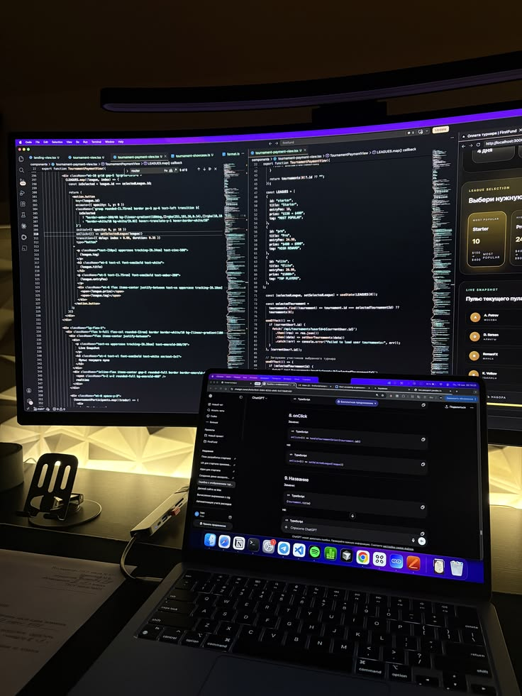
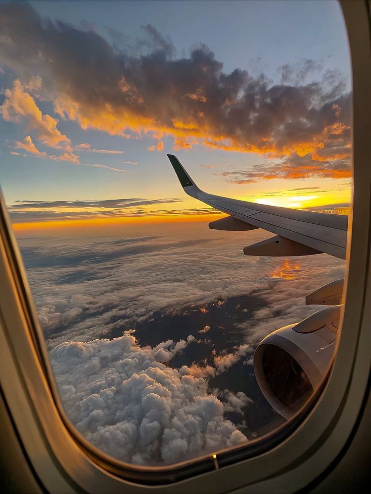
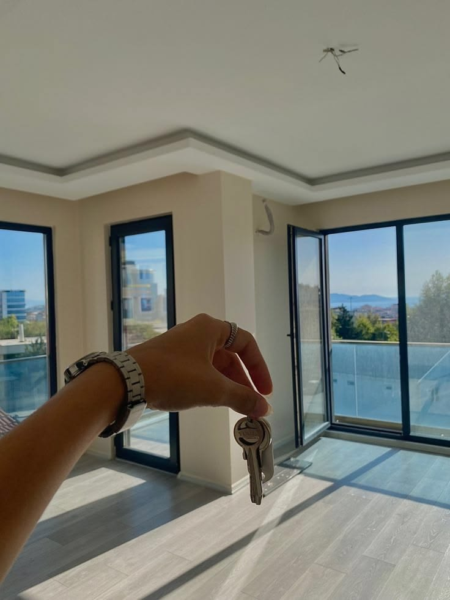
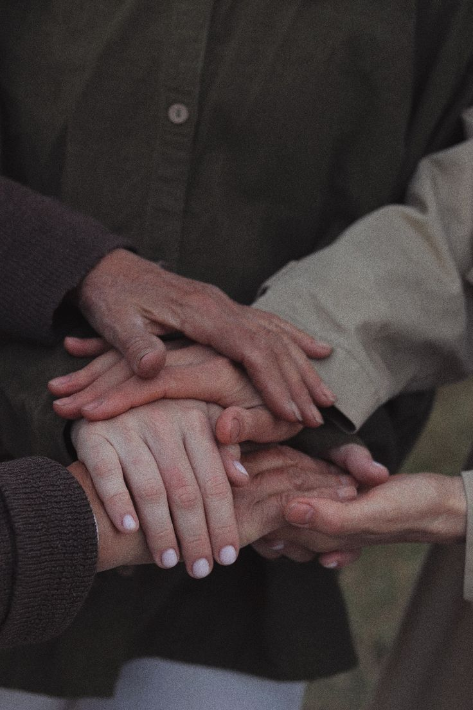
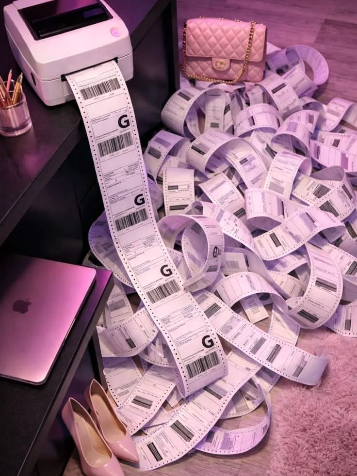

🎓 Graduate from BSIT
My first goal is to finish my Bachelor of Science in Information Technology and graduate proudly with my family beside me.
Dream big, work hard, stay humble. Every little step I take today brings me closer to the life I hope to build tomorrow.
My goals remind me why I keep learning and trying, even when the journey feels challenging. I know that patience, effort, and support from the people I love will help me move forward.
Six goals that inspire me to keep growing, one step at a time.
My first goal is to finish my Bachelor of Science in Information Technology and graduate proudly with my family beside me.

I dream of becoming a skilled software developer and creating useful applications that can help people every day.

I want to visit beautiful countries, experience different cultures, and make unforgettable memories.

One of my biggest dreams is to build a beautiful and peaceful home where my family can live comfortably and happily.

I want to thank my parents for their sacrifices by helping them live comfortably and making them proud of me.

Someday, I hope to own a successful business that lets me help others while working toward financial stability.